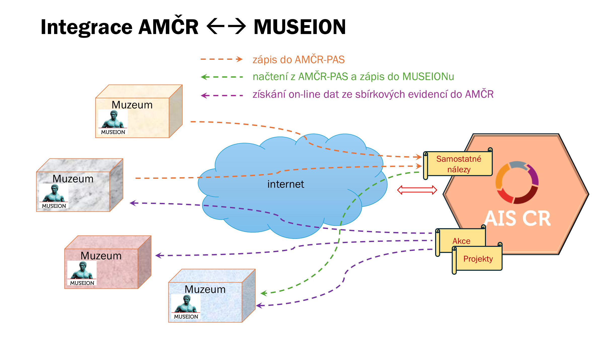

Předměty ve sbírkách muzeí (MUSEION)
Tutoriál k zobrazení údajů ze sbírkové evidence muzeí v Digitálním archivu AMČR
Digitální archiv AMČR je dostupný na stránce https://digiarchiv.aiscr.cz/. Informace pro muzea, která chtějí svá data poskytovat, najdete v části Dohody o využívání AMČR.
Digitální archiv AMČR umí u projektů, akcí a samostatných nálezů zobrazit předměty, které k danému záznamu evidují muzea ve svém systému pro správu sbírek MUSEION společnosti Axiell. Údaje se načítají on-line přímo ze sbírkové evidence napojených muzeí, a to v okamžiku, kdy si je zobrazíte. Jde o jeden ze scénářů integrace AMČR a MUSEIONu, v dokumentaci obou systémů označovaný jako scénář S6 (získání dat ze sbírkové evidence dle AMČR ID).
AMČR přitom nezískává údaje o všech předmětech v muzejních sbírkách, ale jen o těch, u nichž muzeum v MUSEIONu uvedlo identifikátor AMČR – projektu, akce nebo samostatného nálezu.

Kde údaje z muzeí najdete
Tlačítko u záznamu
U projektu, akce nebo samostatného nálezu, ke kterému eviduje předměty alespoň jedno napojené muzeum, se mezi akcemi záznamu zobrazí tlačítko s ikonou muzea a nápovědou Zobrazit evidované předměty v napojených systémech Museion. Tlačítko je dostupné ve výsledcích vyhledávání i v detailu záznamu.
U ostatních záznamů se tlačítko nezobrazuje. Seznam záznamů, ke kterým muzea předměty evidují, se v Digitálním archivu pravidelně obnovuje, takže nově propojený záznam se může u tlačítka projevit s určitým zpožděním.
Filtr „Evidované v Museion”
V liště nad výsledky vyhledávání (vedle tlačítek pro export a oblíbené) je ikona muzea s nápovědou Evidované v Museion. Jejím zapnutím omezíte výsledky jen na záznamy, ke kterým napojená muzea evidují předměty. Aktivní filtr se zobrazí mezi použitými filtry, odkud ho lze křížkem opět odebrat.
Stránka s předměty
Po kliknutí na tlačítko se v nové záložce prohlížeče otevře stránka Předměty evidované k záznamu s identifikátorem daného záznamu.
- Správce sbírky – rozbalovací nabídka muzeí, která k záznamu vrátila nějaké předměty. Pokud jich je více, přepnutím v nabídce zobrazíte předměty jiného muzea. V nabídce jsou jen muzea, která pro daný záznam skutečně nějaká data vrátila.
- Počty – vedle nabídky se zobrazuje
Počet evidenčních čísel v pomocné evidenciaPočet inventárních čísel v systematické evidencivybraného muzea. - Tabulka předmětů – jeden řádek odpovídá jednomu předmětu, a to z pomocné i ze systematické evidence muzea. Po najetí myší na záhlaví sloupce se zobrazí vysvětlení, co daný údaj obsahuje.
Pokud žádné napojené muzeum k záznamu data nevrátí, zobrazí se hláška Záznam se nepodařilo najít. Stejně se projeví i situace, kdy je systém muzea právě nedostupný – takové muzeum se v nabídce jednoduše neobjeví.
Proč jsou některé řádky téměř prázdné (BASIC a FULL)
O tom, jaké údaje o svých předmětech poskytne, rozhoduje muzeum, a to pro každý záznam předmětu zvlášť. Rozlišují se dvě úrovně přístupu:
| Úroveň | Co se zobrazí |
|---|---|
FULL |
Vybrané odborné údaje o předmětu, např. fond, sbírka, označení, popis, datace, materiál, technika, rozměry, nálezové okolnosti a kontext. |
BASIC |
Pouze evidenční, resp. inventární číslo; muzeum, které předmět spravuje, je uvedeno v nabídce Správce sbírky. |
Podle toho se mění i podoba tabulky:
- Poskytuje-li vybrané muzeum k záznamu alespoň jeden předmět v úrovni FULL, zobrazí se úplná tabulka a jejím prvním sloupcem je
Přístups úrovní každého předmětu. Předměty v úrovni BASIC mají v takové tabulce vyplněné jen číslo a ostatní buňky zůstávají prázdné. - Jsou-li všechny předměty v úrovni BASIC, zobrazí se zjednodušená tabulka s jediným sloupcem
Evidenční číslo.
Prázdné buňky tedy neznamenají chybějící nebo ztracená data, ale rozhodnutí muzea, v jakém rozsahu údaje o daném předmětu zpřístupní.
Na co pamatovat
- Fotografie se nepřenášejí. Stránka zobrazuje pouze textovou tabulku údajů. Fotografie předmětů se do AMČR dostávají jen tehdy, když muzeum nález z MUSEIONu exportuje do AMČR-PAS; takový záznam se pak řídí stejnými pravidly jako jakýkoli jiný záznam AMČR-PAS.
- Nearchivované záznamy vyžadují přihlášení. Tlačítko se zobrazuje u záznamu, který v Digitálním archivu vidíte. U záznamů, které dosud nejsou archivované, se proto musíte do Digitálního archivu přihlásit; použijete k tomu stejné přihlašovací údaje jako do AMČR.
- Údaje patří muzeu. Zobrazují se v podobě, v jaké je muzeum eviduje v okamžiku načtení; jejich opravy a doplnění je třeba řešit s příslušným muzeem.